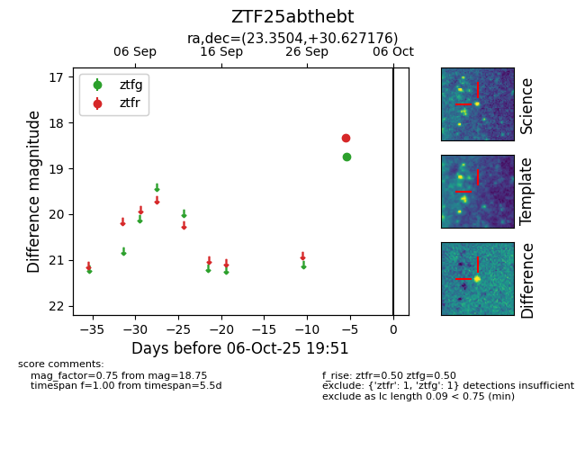

FINK: ZTF25abthebt
Lasair: ZTF25abthebt
ALeRCE: ZTF25abthebt
ZTF25abthebt (ztf,fink)
equatorial (ra, dec) = (23.3504,+30.62718)
galactic (l, b) = (133.5071,-31.38140)

last ztfg=18.75, ztfr=18.33
1 ztfg, 1 ztfr detections